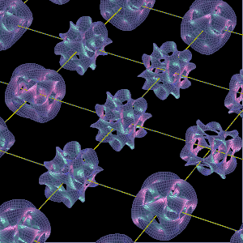
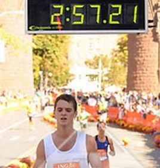
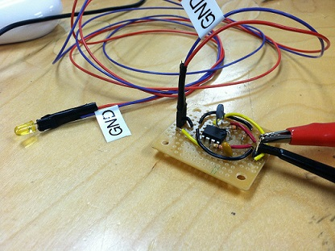
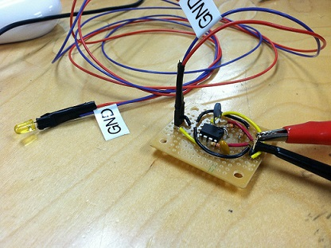
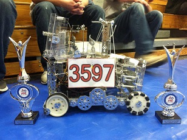
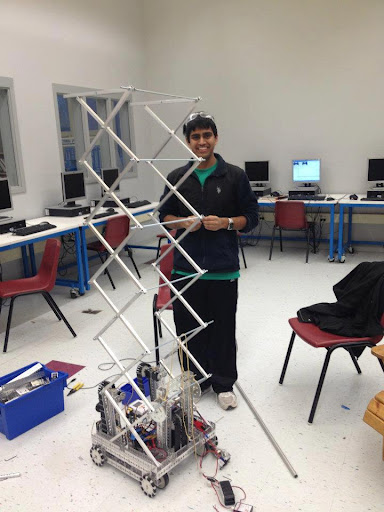
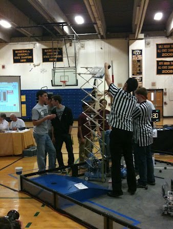

I'm Alex. This is my site.
Hello! I am a student of computer science, mathematics, and economics at the University of Massachusetts Amherst in the College of Computer Science. I have an interest in predictive analytics, neural networks, and the wide world of software engineering.  I am a workout enthusiast, self-proclaimed reader, and college basketball fan. My freshman year I trained for marathons, where I became fortunate enough to join the UMass Cross Country team under Coach Ken Obrien, but I am currently focusing on random things like chess and the butterfly effect. When I am not running or reading academic articles, I spend time studying motivation and time management. I find the science behind our innate tendencies fascinating and always look for a good "underdog" story to captivate me. Luckily, this interest of mine allows me to stay focused on my Sunday morning long runs, but at the same time reminds me how closely related we are to monkeys.
Data mining, artificial intelligence, networks, and software engineering are all under my microscope.
I currently program in Groovy (a dynamic programming language derived from java) at ESPN. My coursework has focused on programming in Java but I have also had the opportunity to study a host of languages. I have gained a familiarity in Scala, Python, XHTML, CSS, C++, R, shell scripting in UNIX, and C. My courses can be seen below. My first semester at the University I had the opportunity to design and implement a power distribution unit for a University sponsored robot named Emma5. The board was designed in EagleCAD and was implemented that same semester. It was designed to prevent short-circuits that had previously burnt the ribbon cable. This was apart of the Electrical Engineering department where I learned low-level logic gate implementation of designs. I had the privilege of working at Green Lead Inc. in Andover, MA a business to business software marketing company. I worked on and maintained a dialing agent that was responsible for connecting prospects directly to clients which would bypass the neccessity of brute force dialing by the client. The customers of Green Leads Inc. include Informatica, Coverity, Cisco, and Lexmark. My early years in high school began my overall experience in engineering and computer science through the First Tech Challenge. We designed a 24"x24" robot that could lift objects up to 10 feet in the air in order to score points for tournament play. Our team won the Bridgewater State Championship and moved onto the State Championship where we placed (a disappointing) second. The robot was programmed in Carnegie Mellon's ROBOTC and was completely fabricated in the high schools machine shop.
| Fall 2013 | Winter 2013 | |
|---|---|---|
| CMPSCI121 Intro Problem Solving W/Comp | POLISCI252 Globalization, Governance&World Order | |
| E&C-ENG297DP Emma5 Design Project | ||
| ENGIN112 Intro Electrical & Comp Engin | ||
| HONORS291A HonSem1:Ideas/ChangeTheWorld | ||
| MATH132H Honors Calculus II | ||
| Spring 2014 | Summer 2014 | |
| CMPSCI187 Progamming w/Data Structures | CMPSCI305 Social Issues in Computing | |
| CMPSCI197U ST-A Hands-On Intro to UNIX | ECON103 Introduction to Microeconomics | |
| MATH233 Multivariate Calculus | ||
| BIOLOGY110 Intro Biology - Science Majors | ||
| COMP-LIT133 Intro to Science Fiction | ||
| Fall2014 | Winter 2014 | Spring 2015 |
| CMPSCI220 Programming Methodology | Linear Algebra (Through LSU Baton Rouge) | (ESPN Software Development Intern - Bristol, CT) |
| CMPSCI250 Introduction To Computation | ||
| CMPSCI197WP ST-Intro to HTML/CSS | ||
| ECON309H Game Theory, Honors |
Cool Stuff
Some pictures of my good (painful) side as well as some of the robots I have worked on.
Qualifying for Boston at the Hartford ING Marathon October, 2013! Miles 18 through 22 were blazing fast and I paid for it hard. Typical rookie mistake! Glad to still go under 3 hours and win my division (19 and under).
 

This is Emma5 (above). An autonomous robot that was programmed using Arduino. The robot is powered by a 12 volt car battery and contains 8 infrared sensors to navigate it's surroundings. We developed the powerboard shown on the right. We also hacked an old Nintendo-64 steering wheel and gas pedals to steer the robot manually (above) using a wireless arduino module. I have since left the project but the Electrical Engineering lab at M5 continues to add functionality.
 This robot competed in First Tech Challenge. The above robot qualified us for the state championship by winning the Bridgewater State Qualifier. We then had 5 weeks before the State Championship so we started from scratch in an attempt to qualify for nationals. The right shows our progress with about a week to go. Below is our robot at the State Championship where it is shown lifting a crate about 8 feet in the air. We placed second but were unable to advance to nationals.
5 websites and apps that I feel everyone should at least know about.
- 8tracks - Algorithms are not yet good enough for your impeccable taste in music. Let humans who love making playlists satisfy your ears.
- Sleep Cycle - You don't know it, but you have been sleeping wrong since you were a child. Becoming self-aware of your sleeping patterns is the first step towards fixing them. Also take your heart rate every morning, because in 5 years everyone will be anyways.
- Feedly - You're too lazy to pick up a newspaper so send it to your phone instead. But be careful, there is a fine line between using it as a distraction and using it as an information source.
- Quora - As Steve Jobs said best, "people don't know what they want until you show it to them." Quora will answer the questions you have been yearning to know but did not know how to ask. As a plus, the questions will be answered by some of the most qualified people in the world.
- Robinhood - Although my bank account does not justify losing my money in the stock market, nor do I necessarily condone jumping into the market alone. I think this app is very disruptive and represents the people well.
Reach out to me! I am open to project ideas and any material that would make me a better scientist, or send me cool xkcd comics..
University Email: asulliva@umass.edu Personal Email: sullivan1513@gmail.com Cell: 6178354694 LinkedIn .